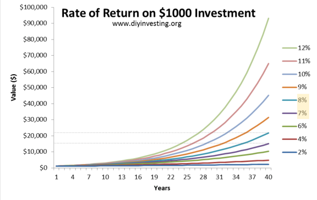
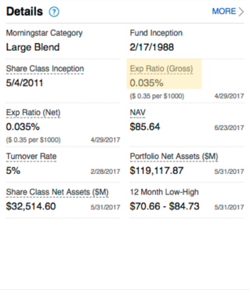

Investing 101
Table of Contents
- Preamble
- Why should you invest?
- What can you invest in?
- Intermission
- Funds
- Special Cases
First thing's first
- I am not providing personal investment advice, and I am not a licensed investment advisor.
- Any investments you make are done at your own risk. I am not liable for any actions or inactions you take.
- All information I am presenting is for informational purposes only, and should not be considered financial advice.
- tl;dr: Please don’t sue me.
Investing may not be for you if…
You have high interest rate debts:
- student loans, credit cards, gambling, …
- Do you think that the investment will give you more money than the debt is costing?
- With any debts, consider the cost-benefits of investing -vs- paying it off
You don’t have an emergency fund:
- 3-6 months of living expenses set aside
- Don’t put this in anything more than savings account or money market*
- If things get rough for whatever reason, you’ll want this to be liquid
Why should you invest?
Inflation
Inflation is...
- Every day, a dollar is worth a little bit less than it was the day before
- Recently, we’ve been at around 2% per year
- If you could buy a pack of gummy bears last year for $1, they’ll now cost about $1.02
- After 5 years, $1.10
- After 10, $1.22
- Pretty soon, gummy bears are a .01%-er luxury good (Damn you, Bill Gates and your delicious gummies!)
- Or maybe they’ll do something sneaky like put fewer in a pack…
**cough cough ice cream cough**Let's take a look at some graphs of inflation over time. First we have a long range chart, 1958 - 2017:
 There's a lot of crazy stuff happening up through the 80s, but more recently it's calmed down immensely.
There's a lot of crazy stuff happening up through the 80s, but more recently it's calmed down immensely.
Next, let's look at a more recent view, 2000 - 2017: The Fed has made it a goal to keep inflation around 2%*, and we can see that we're right about there on any given year. If your investment returns are greater then that, then your money is growing in value. If it's less, then you're losing value.
Your money can "work" for you
- “Investing” can help combat the corrosive effects of inflation*
* It can also help increase your wealth
- The general idea is to let other people or businesses use your money now on the promise (or hope) of getting more in the future
What can you invest in?
Things we'll be talking about:Things we won't:- Real Estate
- Commodities (oranges, gold, bitcoin)
- Currency (forex)
- P2P Lending
- And many more!
Savings Accounts

- A bank account that earns interest
- FDIC insured up to $250,000
- Low volatility (how much the rate of return will change over time)
- Good for short term savings
- ~0.01%-2% return*
- 1.65% Synchrony
- 1.60% Ally
- 1.55% CIT Bank
- 1.55% Discover ----------------
- 0.05-0.15% USAA
- 0.01% Chase, Wells Fargo, Bank of America
* rates probably out of dateMoney Market
- Short term loans to companies or banks
- Usually 1 year or less
- Can directly invest, or go through a bank account
- Low volatility
- Good for short term savings
- ~0.1-2.0% return
- May want to skip these right now while their return is lower than a good savings accounts
Bonds
- Buying and selling loans
- Corporate
- Government T-Notes (US)
- Moderate Volatility with higher grades
- Different “grades” for estimating risk/reward
- Investment (lower return, lower risk)
- Junk/High yield (higher return, higher risk)
Stocks
- Represents a stake in some corporation
- You may vote in shareholder meetings
- You may receive a portion of the company’s profits
- Can sell your share to someone else
- Profits
- You either receive regular dividend payments
- Or that money is reinvested in the company
- Price of a stock is (loosely) tied to the profitability of the company
- Higher volatility
And now a brief intermission...
Feel free to take a bathroom break, make some coffee, walk the dog, or make a large purchase on a perfectly legitimate website .
Choosing is hard
You may be thinking to yourself,If this sounds like you, then let me let you in on a little secret:"Self, this all sounds super complicated. I think I'll just continue to not invest my money."-YouMost people don't beat the market over time either[citation].Even the professionals!- ~80% of managers don’t beat the S&P indices over a 1 year period
- 85-91% of managers don’t beat the S&P indices over a 10 year period
And that's great, but please stop interrupting me. We'll get there. This is a journey."What are these S&P indices?"-You, againThe Market
When people talk about "The Market" doing [well|poorly], they're generally talking about the S&P 500 or some other similar index of companies. In the example of the S&P 500, it "tracks" 500 large companies like Google, AT&T, and 3M. You can find the full listing here. With any index, the value of each component company is weighted and combined, giving a value for that index, in this case, listed as SPX.
So, if someone says that the Economy is doing poorly today as evidenced by the S&P 500 being down, say 5 percent, that means that of the companies that make up the S&P 500, more of them are doing worse than good - enough so to move the value of all of them down. Any given index being "down" or "up" doesn't reflect what the entire economy is doing, just the general movement of those companies involved. The actual formulation that describes how each company contributes to the movements of a given index is beyond the scope of this course, but if you're interested in that, the info is publicly available.
So, let's take a look at historical returns of the S&P 500
Log Scale

Something you don't usually see when looking at stock charts is the logarithmic scaled chart. An advantage this gives you is that you are able to see percentage increases linearly (i.e. a 6% increase from 100 looks the same as a 6% increase from 100000).
Linear Scale
Much harder to interpret.
Next, let's look at how things turn out over time.
Best and Worst N-year periods of the S&P 500, annualized return
1 5 10 15 20 25 Best 52.56% 28.44% 21.56% 19.45% 18.38% 17.86% Worst -43.84% -8.42% 0.65% 3.68% 5.63% 8.09% The above table shows the best and worst 1, 5, 10, 15, 20, and 25 year periods of the S&P 500, going all the way back to 1929. To create these numbers, I used data from http://pages.stern.nyu.edu/~adamodar/New_Home_Page/datafile/histretSP.html and the magic of spreadsheets to generate these geometric averages.
In any given year, an index like this can have massive swings. However, if you're able to ride out the storm, investing in an index like this has historically been pretty good, yielding an 8% annual return over the worst 25-year period.
* Past performance does not guarantee future results.Other fun S&P 500 things:
- Average S&P 500 return/year:
- 1928-2016: 11.42%
- 2007-2016: 8.64%
- Fun fact: if you invested $100 in 1928 in the S&P 500, you’d have a cool $328,584.46 now
You'd also be dead.
Let's reiterate:
Most people and portfolio managers don't beat their target index over time.- ~80% of managers don’t beat the S&P indices over a 1 year period
- 85-91% of managers don’t beat the S&P indices over a 10 year period
Simple enough. You try to match those indices. With Funds."Okay, great. Now how do I use this?"-You, angrily
Funds
Funds take some subset of investments (US Large Capitalization Stocks, European Junk Bonds, etc) and bundle them in a way that's easy for casual investors to trade. A bunch of people will pool their money via a broker, and that broker will buy and sell on their behalf.
Mutual and Index Funds
The two main types are Mutual Funds and Index funds, where Index funds are a subset of Mutual funds. Just like stocks, these funds will have shares that you can buy. Each of those shares will represent the basket of investments the fund contains.
Unlike normal stocks and bonds though, funds have a fee associated with holding them. This fee is called the Expense Ratio and is used to pay for any overhead associated with running the fund. The lower the overhead, the lower the fee.
One of the easiest ways to lower fees is to not actively pick the underlying assets, and instead tie the fund to an index like we talked about above. Mutual Funds that do this are called Index Funds. On the image to the right, you can see an index fund that is attempting to track the S&P 500, and how closely it's able to do so. In this case, we're looking at the Vanguard Total Stock Market Index Fund.
Expense Ratios
As mentioned above, every fund will have an Expense Ratio. This is the Percentage Cost Per Year to participate in a given fund.
So, for example, if you buy into a fund that has an expense ratio of 1%, and the fund yields 3% this year, you'll have a profit of 2%. What does that mean in real money? Have a look below:
I've highlighted the 8% and 7% lines to show what you might find if you were in a fund that returned 8%, but had an expense ratio of 1%. In the above example, we're only dealing with $1000, but over a course of 40 years. If you follow the dotted lines back to the left axis, you'll see that there's a difference of roughly $6,000 in the returns lost to the expense ratio.
But enough theory, let's take a look at some real-life funds and their expense ratios.
So what do actual funds looks like?
Fidelity 500 Index Fund (FXSIX)A fidelity Index fund with an expense ratio of 0.035%Fidelity Small Cap Discovery Fund (FSCRX)A fidelity Mutual fund with an expense ratio of 1.01%The above funds are real life examples that I pulled from my company's 401k plan. In order for the fund on the right (FSCRX) to compete with the left (FXSIX), it must overcome .975% of returns.
Further, some funds will give you better expense ratios when you deposit more money. In the above example I've listed two Vanguard funds that only differ in their minimum depost. On the left, a deposit between $3000 and $9999 will get you an expense ratio of 0.15%. On the right, a deposit over $10,000 will get you an expense ratio of 0.04%.
Buying a fund
There are two main ways to buy a fund: through a broker's own service, or on a stock exchange using Exchange Traded Funds (ETFs).
Through a broker's service
For this example, I'll use Vanguard, as I have experience with their process:
- Create an account
- Personal or Retirement (IRA/etc)
- Select one or more funds to throw your money at
- Many funds have several tiers, like “Investor” and “Admiral”
- “Admiral” funds require a higher minimum balance, but have lower Expense Ratios
- Set up a bank transfer for your initial deposit
- Each fund has a minimum balance, so at least that
- You can then set up recurring automatic deposits (or not)
ETFs
ETFs are funds bought and sold on a normal stock exchange. For most of the funds that a broker provides, you'll be able to find the equivalend ETF on the open market.
With ETFs, you get more flexibility in buying and selling, but you don't get the total allocation that buying partial shares gets you. If you'd like more info ETFs, I'd suggest google.
Fund Diversification
- Or maybe they’ll do something sneaky like put fewer in a pack…